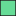

<!doctype html>
<html lang="en">
    <head>
        <meta charset="utf-8">
        <meta http-equiv="X-UA-Compatible" content="IE=edge">
        <meta name="viewport" content="initial-scale=1,user-scalable=no,maximum-scale=1,width=device-width">
        <meta name="mobile-web-app-capable" content="yes">
        <meta name="apple-mobile-web-app-capable" content="yes">
        <link rel="stylesheet" href="css/leaflet.css">
        <link rel="stylesheet" href="css/qgis2web.css"><link rel="stylesheet" href="css/fontawesome-all.min.css">
        <link rel="stylesheet" href="css/leaflet-measure.css">
        <style>
        html, body, #map {
            width: 100%;
            height: 100%;
            padding: 0;
            margin: 0;
        }
        </style>
        <title></title>
    </head>
    <body>
        <div id="map">
        </div>
        <script src="js/qgis2web_expressions.js"></script>
        <script src="js/leaflet.js"></script>
        <script src="js/leaflet.rotatedMarker.js"></script>
        <script src="js/leaflet.pattern.js"></script>
        <script src="js/leaflet-hash.js"></script>
        <script src="js/Autolinker.min.js"></script>
        <script src="js/rbush.min.js"></script>
        <script src="js/labelgun.min.js"></script>
        <script src="js/labels.js"></script>
        <script src="js/leaflet-measure.js"></script>
        <script src="data/Penggunaan_Lahan_1.js"></script>
        <script>
        var highlightLayer;
        function highlightFeature(e) {
            highlightLayer = e.target;

            if (e.target.feature.geometry.type === 'LineString') {
              highlightLayer.setStyle({
                color: '#ffff00',
              });
            } else {
              highlightLayer.setStyle({
                fillColor: '#ffff00',
                fillOpacity: 1
              });
            }
        }
        var map = L.map('map', {
            zoomControl:true, maxZoom:28, minZoom:1
        }).fitBounds([[-7.120132240493645,110.25928624767653],[-6.929175624877651,110.51908385667147]]);
        var hash = new L.Hash(map);
        map.attributionControl.setPrefix('<a href="https://github.com/tomchadwin/qgis2web" target="_blank">qgis2web</a> &middot; <a href="https://leafletjs.com" title="A JS library for interactive maps">Leaflet</a> &middot; <a href="https://qgis.org">QGIS</a>');
        var autolinker = new Autolinker({truncate: {length: 30, location: 'smart'}});
        var measureControl = new L.Control.Measure({
            position: 'topleft',
            primaryLengthUnit: 'meters',
            secondaryLengthUnit: 'kilometers',
            primaryAreaUnit: 'sqmeters',
            secondaryAreaUnit: 'hectares'
        });
        measureControl.addTo(map);
        document.getElementsByClassName('leaflet-control-measure-toggle')[0]
        .innerHTML = '';
        document.getElementsByClassName('leaflet-control-measure-toggle')[0]
        .className += ' fas fa-ruler';
        var bounds_group = new L.featureGroup([]);
        function setBounds() {
        }
        map.createPane('pane_Klasifikasi_0');
        map.getPane('pane_Klasifikasi_0').style.zIndex = 400;
        var img_Klasifikasi_0 = 'data/Klasifikasi_0.png';
        var img_bounds_Klasifikasi_0 = [[-7.1155826862018,110.26969601852363],[-6.933730166687465,110.50868030397513]];
        var layer_Klasifikasi_0 = new L.imageOverlay(img_Klasifikasi_0,
                                              img_bounds_Klasifikasi_0,
                                              {pane: 'pane_Klasifikasi_0'});
        bounds_group.addLayer(layer_Klasifikasi_0);
        map.addLayer(layer_Klasifikasi_0);
        function pop_Penggunaan_Lahan_1(feature, layer) {
            layer.on({
                mouseout: function(e) {
                    for (i in e.target._eventParents) {
                        e.target._eventParents[i].resetStyle(e.target);
                    }
                },
                mouseover: highlightFeature,
            });
            var popupContent = '<table>\
                    <tr>\
                        <td colspan="2">' + (feature.properties['Pengg_Lah'] !== null ? autolinker.link(feature.properties['Pengg_Lah'].toLocaleString()) : '') + '</td>\
                    </tr>\
                    <tr>\
                        <td colspan="2">' + (feature.properties['SK8'] !== null ? autolinker.link(feature.properties['SK8'].toLocaleString()) : '') + '</td>\
                    </tr>\
                    <tr>\
                        <td colspan="2">' + (feature.properties['B8'] !== null ? autolinker.link(feature.properties['B8'].toLocaleString()) : '') + '</td>\
                    </tr>\
                    <tr>\
                        <td colspan="2">' + (feature.properties['ST8'] !== null ? autolinker.link(feature.properties['ST8'].toLocaleString()) : '') + '</td>\
                    </tr>\
                </table>';
            layer.bindPopup(popupContent, {maxHeight: 400});
        }

        function style_Penggunaan_Lahan_1_0(feature) {
            switch(String(feature.properties['SK8'])) {
                default:
                    return {
                pane: 'pane_Penggunaan_Lahan_1',
                opacity: 1,
                color: 'rgba(35,35,35,1.0)',
                dashArray: '',
                lineCap: 'butt',
                lineJoin: 'miter',
                weight: 1.0, 
                fill: true,
                fillOpacity: 1,
                fillColor: 'rgba(58,204,189,1.0)',
                interactive: true,
            }
                    break;
                case '1':
                    return {
                pane: 'pane_Penggunaan_Lahan_1',
                opacity: 1,
                color: 'rgba(35,35,35,1.0)',
                dashArray: '',
                lineCap: 'butt',
                lineJoin: 'miter',
                weight: 1.0, 
                fill: true,
                fillOpacity: 1,
                fillColor: 'rgba(143,210,44,1.0)',
                interactive: true,
            }
                    break;
                case '2':
                    return {
                pane: 'pane_Penggunaan_Lahan_1',
                opacity: 1,
                color: 'rgba(35,35,35,1.0)',
                dashArray: '',
                lineCap: 'butt',
                lineJoin: 'miter',
                weight: 1.0, 
                fill: true,
                fillOpacity: 1,
                fillColor: 'rgba(102,220,151,1.0)',
                interactive: true,
            }
                    break;
                case '3':
                    return {
                pane: 'pane_Penggunaan_Lahan_1',
                opacity: 1,
                color: 'rgba(35,35,35,1.0)',
                dashArray: '',
                lineCap: 'butt',
                lineJoin: 'miter',
                weight: 1.0, 
                fill: true,
                fillOpacity: 1,
                fillColor: 'rgba(47,107,168,1.0)',
                interactive: true,
            }
                    break;
                case '4':
                    return {
                pane: 'pane_Penggunaan_Lahan_1',
                opacity: 1,
                color: 'rgba(35,35,35,1.0)',
                dashArray: '',
                lineCap: 'butt',
                lineJoin: 'miter',
                weight: 1.0, 
                fill: true,
                fillOpacity: 1,
                fillColor: 'rgba(241,236,142,1.0)',
                interactive: true,
            }
                    break;
                case '5':
                    return {
                pane: 'pane_Penggunaan_Lahan_1',
                opacity: 1,
                color: 'rgba(35,35,35,1.0)',
                dashArray: '',
                lineCap: 'butt',
                lineJoin: 'miter',
                weight: 1.0, 
                fill: true,
                fillOpacity: 1,
                fillColor: 'rgba(97,241,64,1.0)',
                interactive: true,
            }
                    break;
            }
        }
        map.createPane('pane_Penggunaan_Lahan_1');
        map.getPane('pane_Penggunaan_Lahan_1').style.zIndex = 401;
        map.getPane('pane_Penggunaan_Lahan_1').style['mix-blend-mode'] = 'normal';
        var layer_Penggunaan_Lahan_1 = new L.geoJson(json_Penggunaan_Lahan_1, {
            attribution: '',
            interactive: true,
            dataVar: 'json_Penggunaan_Lahan_1',
            layerName: 'layer_Penggunaan_Lahan_1',
            pane: 'pane_Penggunaan_Lahan_1',
            onEachFeature: pop_Penggunaan_Lahan_1,
            style: style_Penggunaan_Lahan_1_0,
        });
        bounds_group.addLayer(layer_Penggunaan_Lahan_1);
        map.addLayer(layer_Penggunaan_Lahan_1);
        var baseMaps = {};
        L.control.layers(baseMaps,{'Penggunaan_Lahan<br /><table><tr><td style="text-align: center;"></td><td></td></tr><tr><td style="text-align: center;"></td><td>1</td></tr><tr><td style="text-align: center;"></td><td>2</td></tr><tr><td style="text-align: center;"></td><td>3</td></tr><tr><td style="text-align: center;"></td><td>4</td></tr><tr><td style="text-align: center;"></td><td>5</td></tr></table>': layer_Penggunaan_Lahan_1,"Klasifikasi": layer_Klasifikasi_0,}).addTo(map);
        setBounds();
        L.ImageOverlay.include({
            getBounds: function () {
                return this._bounds;
            }
        });
        </script>
    </body>
</html>
